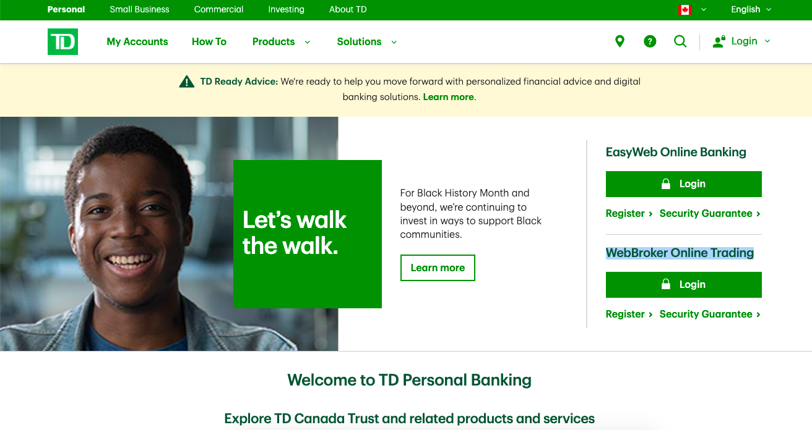
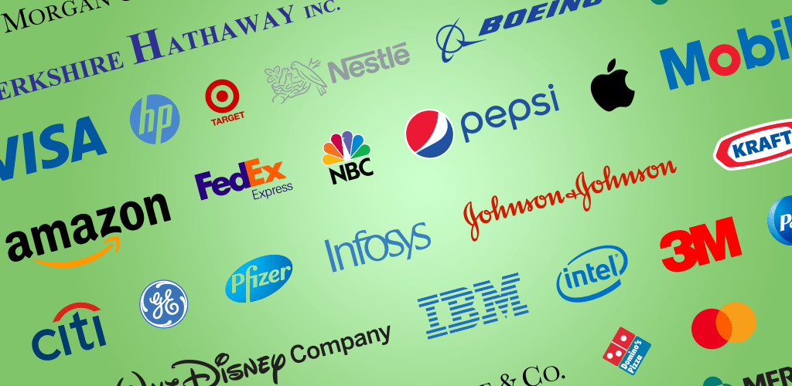
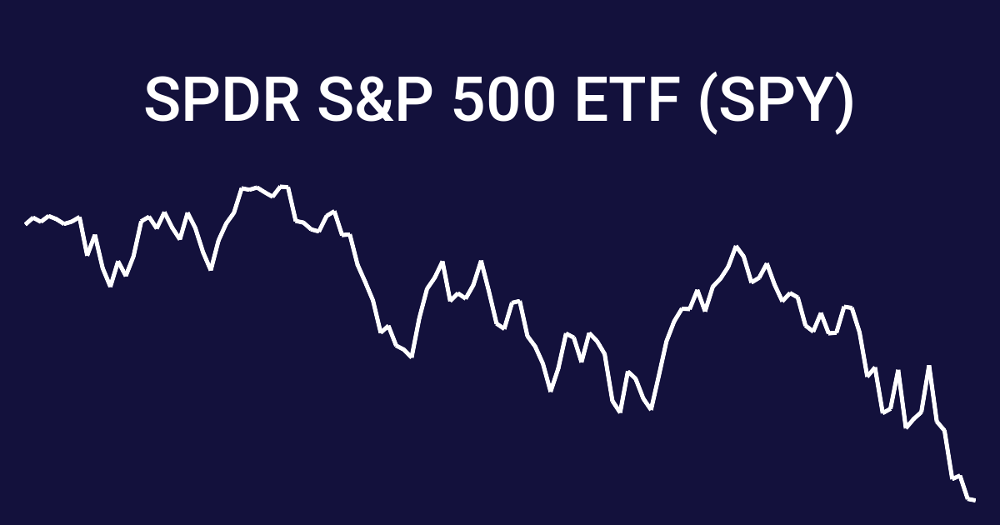
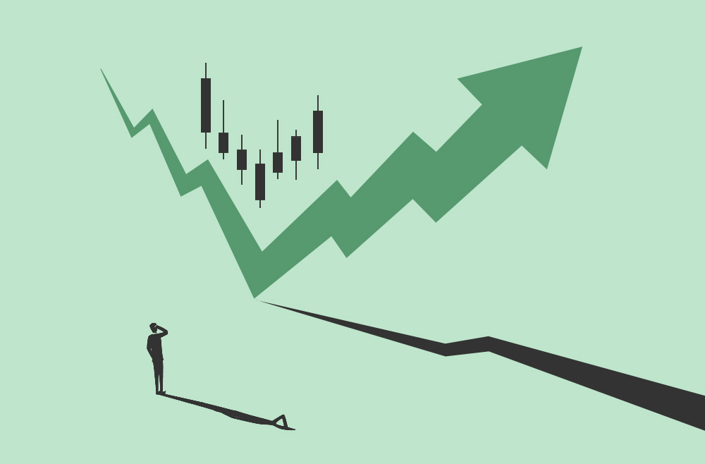

How To Create A Stock Account?
A great stock brokerage account to use for beginners is TD WebBroker Online Trading, but if you need additional help to set up an account.
Refer to this link for help.
How Is It Beneficial To Get Into Stocks At An Early Age?

A small amount of money can go a long way in the long term. Because of compound interest, the difference of a few years over a long period of time is astronomical. Additionally, if you invest while you are young, you have time on your side. Allowing for you to also take more risk early on, so it will be rewarding for you later. Finally, you will have plenty of time to learn from your mistakes which is the most important thing when investing allowing you to have greater returns.
What Are Blue Chip Stocks?
Blue-chip stocks are the biggest companies in the US, these are the 30 companies that create the Dow Jones Index. An example of a few would be; Apple, Microsoft, Google, Netflix, Amazon, Facebook, Tesla and more. All of the companies in the Dow Jones Index have market caps at the minimum in the $100's of billions of dollars. These companies are great to invest in as a beginner as they are reliable, strong companies.
How Does The News Affect Stocks?

The news is the driving factor in the price of a stock, it informs investors, and the public on the performance the company has had recently. This will tell the public if people they should be selling the stock or should buy. An example, "Tesla is planning on building more factories to produce they're cars due to recent demands, potentially creating over 10 gigafactories over the next 10 years!" This is an example that would make the public very bullish on Tesla for the future, and if that news came out today the stock price would increase by quite a bit. Also remember that stocks always move for a reason, it is never random, the information may not be that public yet.
Why Do Stocks Go Up Or Down More Than Others?
Some stocks are more volatile (has a greater beta, 1.0 is the average), this usually depends on the market cap of the company and if the company has big news coming out, or if its new company (just IPOed).
Is There A Stock That Follows The Whole Economy?
Yes there is, it is called the S&P 500 or the ticker symbol (trading symbol) of SPY, which tracks the 500 largest companies in the US.
What is the average wealth amongst all people who invest in the stock market?
It was reported that "80-85% of millionaires are first-generation rich" and "more than 30% of their wealth is invested in publicly traded stocks", these numbers show how the wealthy know that stocks are very important in generating or sustaining wealth. Additionally, the wealthy invested a larger percentage of their income when they weren't as wealthy which rewarded them. In many cases, investing in the stock market or crypto is sole reason how people make their wealth.
Additionally, it is reported that 56% of Americans own stock, this statistic should definitely be increased. Investing should be taught in school and tell the young population the importance of investing at a young age.